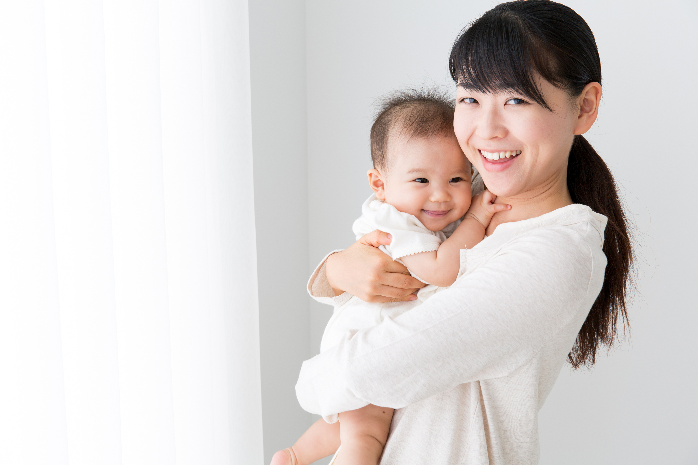
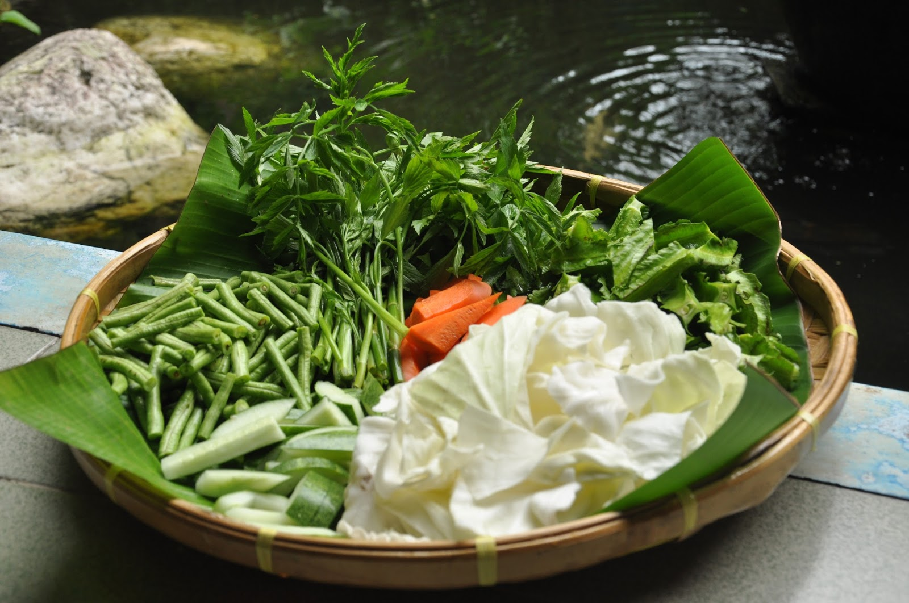
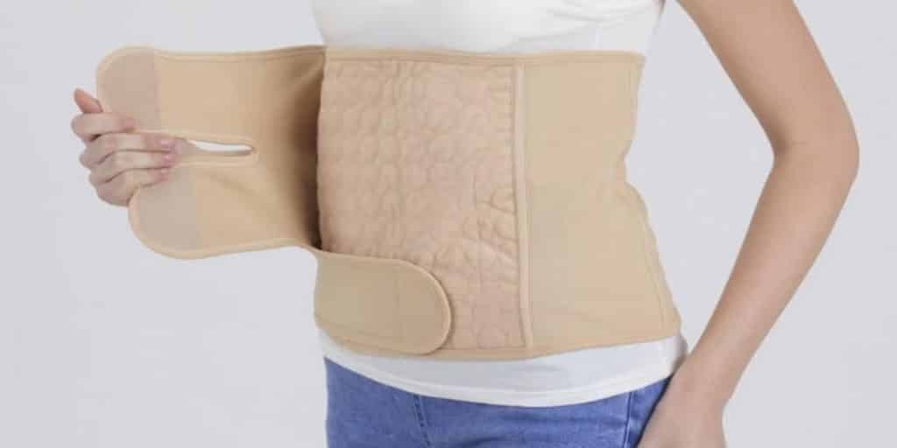
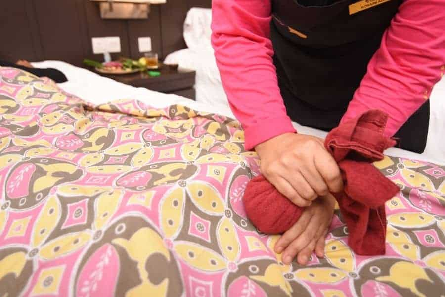
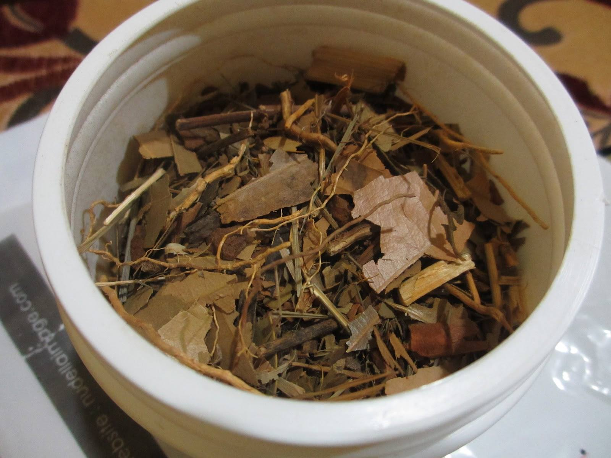
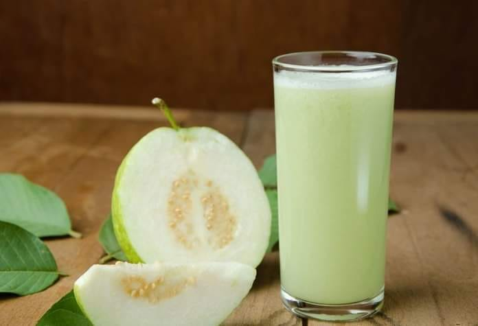

AMALAN BERPANTANG SELEPAS BERSALIN👩🏼🍼
Wanita zaman moden terutama yang tidak bekerjaya semakin melupakan proses berpantang selepas kehamilan. Andaian mereka berpantang sangat leceh dan memelukan ketilitian dalam segala aspek. Aspek penjagaan diri bagi ibu-ibu bersalin semakin dipandang remeh dan diambil ringan oleh ramai wanita hari ini terutama amalan berurut, bertuam, bertungku, bertangas dan berbengkung. Tempoh pantang memang suatu jangkamasa yang membosankan.Banyak perkara-perkara yang sebelum ini menjadi kebiasaan terpaksa ditinggalkan dan pada masa yang sama amalan-amalan baru terpaksa diikuti kerana bimbang akan menjadi bentan dan sebagainya. Tidak dinafikan amalan ini agak leceh, tetapi kesan dan hasilnya berpanjangan. Sekiranya penjagaan diri semasa dalam pantang bersalin diabaikan, kesannya mungkin tidak berlaku serta-merta. Namun apabila melalui kelahiran yang banyak, usia mula meningkat, daya tenaga semakin menurun, barulah terasa lenguh-lenguh dan bisa urat, sendi serta otot, sakit pinggang dan kebas tangan.
1.Kesihatan🤒
Doktor menggalakkan agar hubungan seks tidak dilakukan dalam tempoh 6 minggu selepas bersalin. Hal ini kerana si ibu baru saja melalui proses bersalin yang menyakitkan dan memerlukan masa untuk badan kembali sihat dan kuat. Selain dari itu, ia juga untuk memberi masa kepada bahagian sulit untuk sembuh sepenuhnya apatah lagi bagi mereka yang mempunyai luka eposiotomi.Apa itu luka episiotomi? Luka episiotomi ialah potongan yang dilakukan di bahagian perinium apabila bayi memerlukan bukaan yang lebih besar untuk keluar sewaktu proses bersalin.
2.Ikan🐟

Ibu dalam pantang dilarang memakan ikan masin atau ikan kering kerana makanan tersebut hanya akan menyebabkan darah nifas berbau busuk, cepat kering serta melemahkan daya ketahanan fizikal dan mental. Ilmu perbidanan Melayu menggalakkan memakan ikan yang segar, mengelakkan ikan yang berbisa seperti bawal hitam, terubuk, duri, pari, sembilang serta parang kerana takut menyebabkan bisa atau bentan pada pintu rahim. Selain ikan berbisa, jenis ikan yang dilarang yang menyebabkan kegatalan kulit serta menimbulkan reaksi alahan ialah ikan kembung, tamban, cencaru, atau tongkol dan makanan laut seperti udang, sotong, kerang dan lain-lain. Mengikut petua Melayu, ikan yang disyorkan dalam pantang bersalin ialah haruan dan yu. Ia dipercayai boleh memulihkan luka-luka dalaman dan luaran. Ikan haruan yang hidup di dalam lumpur mengandungi khasiat mineral yang tinggi bagi menyembuhkan luka. Secara tradisi, ikan yu dipercayai dapat membanyakkan susu ibu dan beberapa kajian saintifik turut mendapati perkara tersebut benar.
3.Ulaman Dan Sayuran🍅🥒🥕🥦
Terdapat pelbagai jenis ulam tempatan yang mudah diperoleh di mana-mana, antaranya serai, lengkuas, daun atau ubi cekur, bunga kantan, kunyit hidup, daun kesum serta halia. Ulam-ulaman ini mengandungi fiber, zat galian (mineral) dan pelbagai vitamin, termasuklah A, C dan E, bersifat anti oksidan. Selain ulam di atas, terdapat ulam berkhasiat yang sesuai dimakan oleh ibu dalam pantang, antaranya daun pegaga, pucuk mengkudu, ulam raja, daun lemuni hitam, daun maaf zahir batin, daun sekentut, daun cemumar, daun pudina, daun kari, daun bebuas dan daun ruku. Ibu bersalin dilarang memakan sayur-sayuran menjalar, sejuk serta berangin. Antaranya ialah kangkung, timun, sayur keladi, pucuk ubi, pucuk paku, bayam, sayur atau daun keti (bunga putih), kacang panjang, petola, labu, rebung, kacang botor, jeruk maman, petai, jering serta terung.Ibu bersalin juga harus mengelakkan minuman bergas, sejuk serta tajam seperti air tebu, cincau, kelapa muda serta buah-buahan seperti nenas, jambu, belimbing, durian belanda, mangga, betik, ciku, langsat, tembikai cina, nangka, cempedak, pisang masak hijau, pisang nangka, pisang embun, pisang udang, ubi kayu, ubi keladi, sengkuang, manggis, macang, kuinin, dan binjai. Makanan tersebut dilarang kerana dapat mengakibatkan sakit tulang dan sejuk otot serta lemah sendi. Penyakit-penyakit tersebut diketahui telah banyak berleluasa di barat dan dikenali sebagai arthritis dan rheumatisme
4.Masalah Emosi😢
Dalam masa pantang, sesetengah ibu yang baru melahirkan anak kerap mengalami tekanan jiwa dan emosi. Tekanan ini memang telah wujud sejak ibu hamil dan berterusan hingga melahirkan anak. Ketika pantang pula ibu perlu memberi jagaan yang rapi kepada bayinya. Tekanan fizikal dan mental mempunyai kesan yang kuat terhadap jiwa dan emosi ibu. Akibat tekanan darah ini segolongan wanita mengalami masalah kemurungan (depression) atau ada yang lebih teruk lagi mengalami masalah sakit jiwa (pueperal psychosis)Dalam keadaan yang amat menekan jiwa ada segelintir wanita yang cuba membunuh diri. Tekanan jiwa dan emosi ini boleh dijauhi jika sokongan dan nasihat yang sewajarnya dapat diberikan oleh orang yang penting dalam hidupnya seperti suami. Si isteri sepatutnya diberi bantuan, bukan sahaja bantuan fizikal dari segi jagaan terhadap isteri dan bayi yang baru lahir, tetapi juga sokongan moral. Saudara mara khususnya ibu wanita itu boleh juga membantu mengatasi masalahnya.
5.Berbengkung💁♀️
Mengikut ilmu perbidanan moden, kegunaan bengkung, terutama bagi ibu bersalin normal adalah untuk mengelakkan kemasukkan angin sejuk di liang-liang perut. Selain itu dapat memudahkan pengeluaran angin panas dan kotor iaitu dengan ikatan barut dan ubat yang sempurna. Bengkung yang baik adalah bengkung yang mempunyai diameter yang panjang menutupi daripada paras bawah dada sehingga ke bawah pinggul. Ini dapat memberi sokongan yang kukuh ke atas rahim.Ketika dalam pantang bengkung seelok-eloknya dipakai sepanjang masa dan hanya ditanggalkan ketika mandi. Ianya mula dipakai dari hari ke-4 sehingga habis tempoh pantang atau seberapa lama yang anda kehendaki selepas tempoh pantang. Pemakaian bengkung yang kemas dan kejab dapat membantu mengembalikan bentuk badan ke bentuk asal dengan lebih cepat. Ia juga dapat mengekalkan posisi yang baik terutama bagi ibu-ibu yang menyusu anak
6.Urutan Tradisional💆🏻
Urutan yang baik membantu memulihkan aliran darah, mencuci dan mengeluarkan darah, angin serta lendir yang kotor dan melawasakan nifas daripada tersekat atau tersumbat. Urutan dapat menenangkan emosi, meringankan tubuh badan yang lesu dan melegakan bisa otot dan sendi. Dilarang mengasak, menekan, memaksa atau menolak peranakan dalam tempoh 2 minggu pertama. Ini kerana peranakan masih lemah, luka dan bengkak. Hanya urut dibahu, leher, dada dan payudara. Kemudian dari bahu ke siku, lengan dan jair-jemari. Selepas 2 minggu sehingga 44 hari baru boleh disentuh di bahagian kedudukan rahim.
7.Minum Air Akar Kayu Dan Jambu💧🍐🪵
 Semasa tempoh berpantang ibu-ibu digalakkan meminum air akar kayu dan jamu yang boleh dibeli terus dari penjual-penjual ubatan tradisional. Minum air akar kayu dan jamu dapat menyihatkan badan di samping mengembalikan kesegaran kaum ibu sepanjang tempoh berpantang. Minum air akar kayu turut membantu mengecutkan rahim secara rawatan dalaman kerana khasiat dari campuran herba akar kayu yang digunakan.Cara minum air akar kayu dan jamu turut mempunyai petua dan cara yang tersendiri. Caranya, tekan ibu jari kaki kanan dengan ibu jari kaki kiri supaya rahim dan punggung tidak kembang. Tangan kiri digunakan untuk mengampu payudara agar tegang sentiasa. Selawat sebanyak tiga kali, tarik nafas dan kempiskan perut agar perut tidak buncit. Minum secara senafas agar tidak terasa mual
Ibu-Ibu Yang Baru Bersalin Dinasihatkan Untuk Pantang Elok-Elok😘 Semoga Dapat Speed Recovery❤️🩹